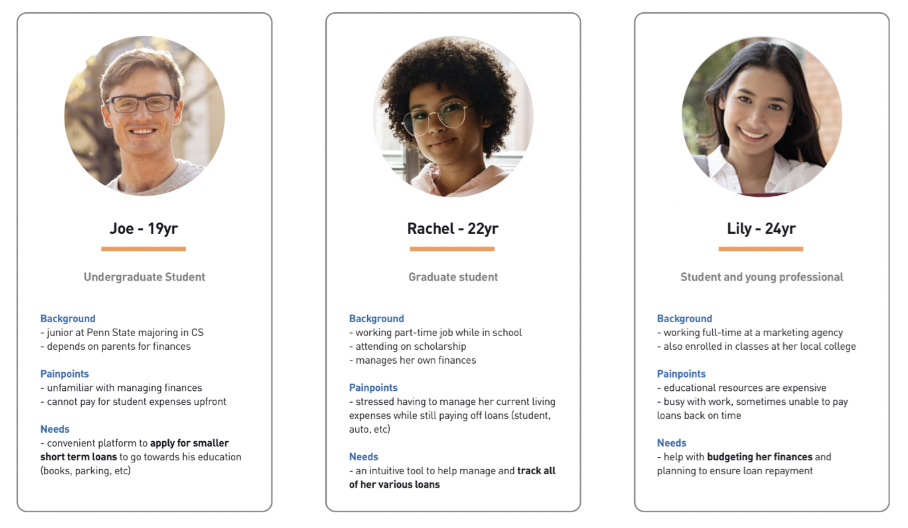

Team
Ari Pearlman
Lexie Rodriguez
Olivia Malvar
Tools
Sketch, Invision, UserZoom
Duration
Summer 2021
During my summer internship at PNC, I completed a capstone project with other interns to answer the design prompt: how might we create an experience giving access to short term funds to students, so they can learn financial responsibility and establish credit history? I contributed as a designer on the team. We had 8 weeks to research, design, and pitch our speculative ideas to the digital team.
Solution: RoundUp Repayment mobile app experience tailored towards student lending and repayment.
To better understand the problem space, we performed a competitive analysis of the market for student finance management. We noticed the following trends:
We conducted a survey to better understand the financial backgrounds and needs of students. We received responses from 26 college-age participants through UserZoom. We found that:
Through a second survey, we wanted a more in-depth understanding of students’ relationships with personal finance. There were 50 college-age participants. Key insights included:
With these research insights, we created three personas based off the data to characterize our target user groups. Through these personas, we identified differenet categories of students who have varying levels of financial indepence and needs depending on their financial situation.
We conducted user testing on our initial prototypes with 7 participants. Feedback we received included that the app was:
Easy to use: participants were easily able to identify and understand the content and its interactions
Visually appealing: the donut graphs were well-received and a positive change int he design
“The app is very user-friendly, easy to use, very modern and minimalistic. It makes me confident that I can successfully manage my student payments.”
“If I had something like this for my loans, I would have a much easier time paying them down.”
Based off the research and feedback, we made updates to the design:
We created a journey map for the new customer experience, visualizing the steps where value is added for customers in the mobile experience.
Following our 2 rounds of user testing, we came to the final iteration of the RoundUp Repayment app. View the final prototype here.